Optical microrobots, manipulated via optical
tweezers (OT), have broad applications in biomedicine. However,
reliable pose and depth perception remain fundamental
challenges due to the transparent, noisy, and dynamic
characteristics of the microscale environments in which they
operate. An open dataset is crucial for enabling reproducible
research, facilitating benchmarking, and accelerating the development
of perception models tailored to microscale challenges.
Standardized evaluation enables consistent comparison across
algorithms, promoting fair assessment and driving progress
in the field. Here, we introduce the OpTical MicroRobot
dataset (OTMR), the first publicly available dataset designed
to support microrobot perception under optical microscope.
OTMR contains 232,881 high-resolution images spanning 18
microrobot types and 176 distinct poses. We benchmarked
the performance of eight deep learning models, including
architectures derived via neural architecture search, on two
key tasks: pose classification and depth regression. Results
indicated that Vision Transformers achieve the highest accuracy
in pose classification, while depth regression benefits from
deeper architectures. Additionally, increasing the size of the
training dataset leads to substantial improvements across both
tasks, highlighting OTMR’s potential as a foundational resource
for robust and generalisable microrobot perception in complex
microscale environments.
Dataset
How can the microtobot be fabricated?
The optical microrobots used in this study were fabricated
using a Nanoscribe 3D printer (Nanoscribe GmbH,Germany) with
IP-L 780 photoresist as the printing material.
The fabrication process employed two-photon polymerization
(2PP). Microrobots were directly printed onto glass substrates
and subsequently immersed in deionized (DI) water within a sealed
spacer chamber for imaging and experimental use.
Eighteen distinct microrobot designs were fabricated for
inclusion in the OTMR dataset. Their CAD models and
corresponding focal plane images are shown in Fig. 2.
Microrobots 1–6 (top row) were primarily used for pose classification,
featuring 176 unique out-of-plane poses generated
by varying rotation angles from 0◦ to 90◦. All 18 types were
used for depth estimation.
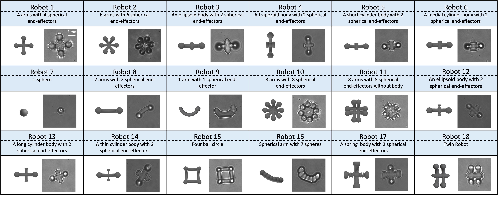
Fig. 2. Overview of the 18 microrobot types included in the OTMR dataset.
For each robot, the left image shows its CAD model, and the right image presents the corresponding
experimental image captured at the focus plane under an optical microscope. Microrobots 1–6 (top row)
are specifically designed for the pose classification task due to their varied and distinguishable
orientations, while all 18 types are used for depth estimation tasks.
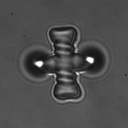
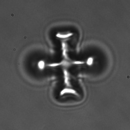
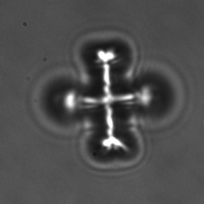
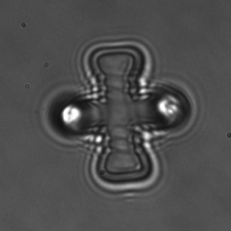
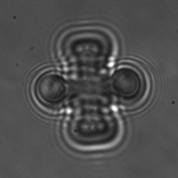
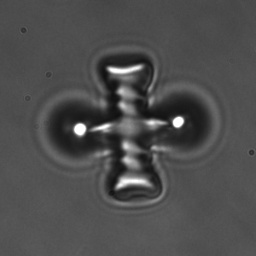
Process Optical Tweezer Video to Single Frames
The aboving figure
provides an example video of microrobots recorded using an optical tweezer. For user convenience,
the dataset includes pre-processed frames and labels. To access the original video files, please contact:
d.zhang17@imperial.ac.uk
or l.wei24@imperial.ac.uk.
How is the video/image collected?
The data collection system is built around an optical
tweezer (OT) platform, exemplified here by the setup from
Elliot Scientific (UK), integrated with a nanopositioning
stage (Mad City Labs Inc., USA). Microscopic images were
captured using a high-speed CCD camera (Basler AG, Germany)
mounted on a Nikon Ti microscope with a 100× oil
immersion objective. Each image frame has a resolution of
678×488 pixels. While this setup is used in our experiments,
the data collection process is broadly compatible with other
commercial OT systems and optical manipulation platforms
that include a high-resolution microscope, making the dataset
applicable across a wide range of micro-manipulation research
environments. A schematic of the system is shown in
Fig. 3.
During data acquisition, microrobots were fixed to a glass
substrate mounted on a piezoelectric stage, enabling precise
vertical translation along the z-axis for accurate depth measurements.
To generate diverse out-of-plane poses, we fabricated
microrobots with systematically varied orientations,
which were further manipulated using the piezoelectric drive
in either discrete steps or continuous motion. For each pose,
over 1,000 image frames were captured to support both pose
classification and depth estimation tasks. All data acquisition
and processing were conducted offline.
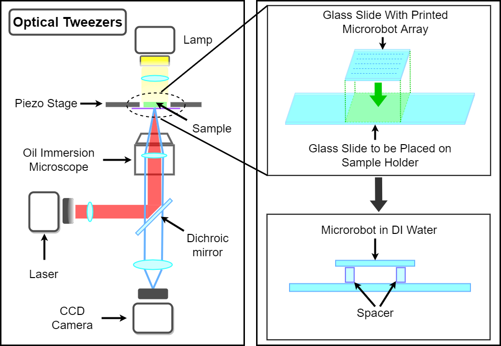
Fig. 3. Overview of the experimental platform for data collection.
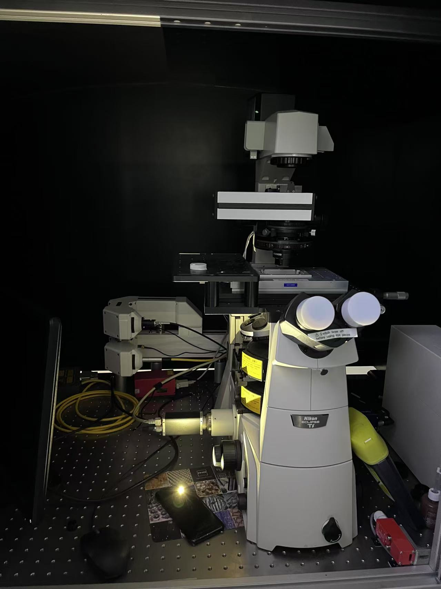
Fig. 4. Image of the experimental setup.
Benchmark
Table II presents the five-fold cross-validation results for
pose classification using two different microrobot types, with
models trained on an equal number of images per pose.
The results indicate that microrobots with more complex
structures—such as Robot 3, which incorporates two distinct
types of spherical components—pose greater challenges for
pose estimation compared to simpler designs like Robot 1,
which consists of four identical spheres. For instance, the
best pitch and roll prediction accuracies for Robot 3 are 3.4%
and 2.7% lower, respectively, than those for Robot 1. Among
all evaluated architectures, the Vision Transformer (ViT) consistently
outperforms the others across different microrobot
types. This superior performance can be attributed to its
pretraining on ImageNet, a large-scale classification dataset
with over 14 million images, as well as its patch-based image
decomposition strategy, which effectively captures local
and global features critical for pose recognition in microscale
environments. Table III compares the computational
characteristics of various models for the pose classification
task, including the number of parameters (in MB), inference
complexity (in GFLOPs), and real-time processing capability
(measured as throughput in images per second). Although
the Vision Transformer (ViT) exhibits the highest GFLOPs
among all models, it is still capable of processing over
1,300 images per second, demonstrating strong real-time
performance despite its computational intensity.
TABLE II
POSE CLASSIFICATION FIVE-FOLD CROSS-VALIDATION RESULTS FOR ROBOT 1 AND ROBOT 3 ACROSS ALL MODELS.
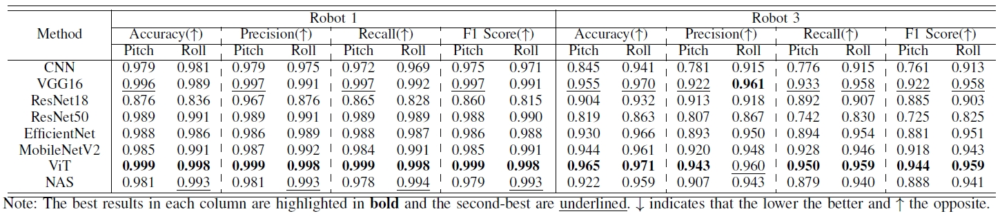
TABLE III
COMPARISON OF MODEL SIZE (MB), INFERENCE COST (GFLOPS) AND
THROUGHPUT THAT MEASURES THE NUMBER OF IMAGES THAT CAN BE
PROCESSED PER SECOND FOR POSE CLASSIFICATION ACROSS
BENCHMARKED METHODS.
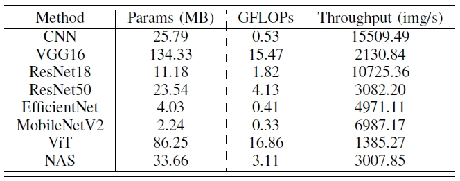
Table IV summarizes the depth regression results for six
different microrobot types. Similar to pose classification,
robots with complex and asymmetric geometries (e.g., Robot
14) are significantly more difficult to regress accurately. The
lowest mean squared error (MSE) obtained on Robot 14
is approximately six times higher than that of a simpler
design like Robot 8. Furthermore, for a given robot, deeper
architectures (e.g., ResNet50) tend to outperform shallower
ones (e.g., ResNet18), highlighting the need for higher model
capacity in depth estimation tasks.
TABLE IV
DEPTH REGRESSION RESULTS FOR ROBOTS 8-18 ACROSS ALL MODELS.
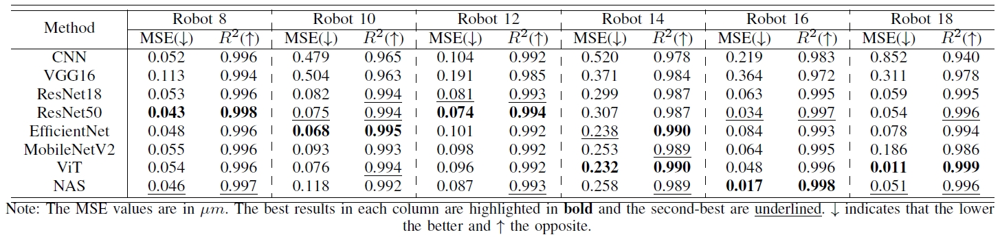
The results of neural architecture search (NAS) are shown
in Table V. The NAS process was applied to CNN-based architectures
and trained from scratch. As reported in Tables II
and IV, the NAS-optimized models consistently outperform
the baseline CNN in all evaluated cases. Notably, the NAS
model achieved the best depth regression performance on
Robot 16, one of the most complex designs, demonstrating
the effectiveness of architecture search in tailoring models
to task difficulty. Moreover, the architectures discovered by
NAS further reflect the relative difficulty of the tasks. The
optimal model for depth regression includes two additional
convolutional layers and a larger fully connected layer compared
to the model optimized for pose classification, aligning
with the inherently more complex nature of continuous-value
prediction in regression tasks.
TABLE V
OPTIMAL ARCHITECTURES FOUND BY NAS FOR POSE CLASSIFICATION AND DEPTH REGRESSION.
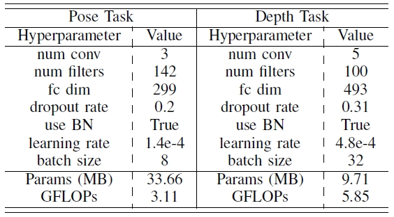
paper-IV-D: Transfer Learning Among Different Robots
To evaluate the generalisation ability of deep learning
models, we conducted a transfer learning experiment using
the best-performing model—ViT—trained on data from
Robot Type 3 for the pose classification task. The trained
model was directly tested on Robot Types 1, 4, and 5 without
further fine-tuning. The evaluation metric is the average
classification accuracy of pitch and roll angles.
As shown in Fig. 7, the model achieves the highest
accuracy on Robot 3, the training target, as expected. Robots
4 and 5 exhibit higher classification accuracy than Robot 1,
likely due to structural similarity to Robot 3. All three robots
(3, 4, and 5) share a common feature: they are composed
of two distinct types of spherical components along the
arms. In contrast, Robot 1 consists of four identical spheres,
which differ significantly in geometry and visual features.
Furthermore, the spatial orientation of the robot also affects
transfer performance. Robot 5 shares the same horizontal
configuration as Robot 3, leading to better generalisation and
higher accuracy. In contrast, Robot 4 is vertically oriented,
which introduces a distribution shift in visual appearance
and results in reduced classification performance compared
to Robot 5.
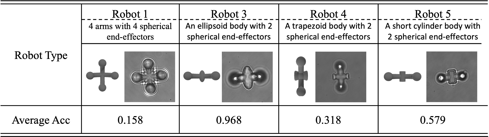
Fig. 7. Transfer learning results of the ViT model trained on Robot Type
3 and tested on different robot types without fine-tuning. The evaluation
metric is the average classification accuracy of pitch and roll angles.
paper-IV-E: Model Interpretability
To gain insights into which regions of an input microrobot
image influence the model’s predictions, we employ
Gradient-weighted Class Activation Mapping (Grad-
CAM) to visualize the spatial attention of the CNN during
pose classification. As illustrated in Fig. 8, the Grad-
CAM heatmaps highlight the areas that contribute most to
the model’s decision-making process.
The visualizations for Robot Types 1 and 3 reveal that the
model consistently attends to the microrobot structure itself,
particularly the arms and spherical components when determining
the pose. This confirms that CNN has successfully
learned to focus on the relevant features of the microrobot
rather than background noise, providing interpretability and
confidence in the model’s classification behaviour.
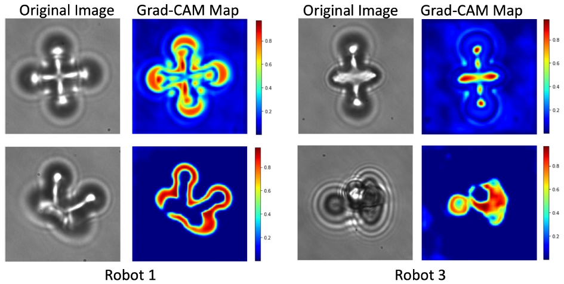
Fig. 8. Grad-CAM visualizations for pose classification on Robot Types
1 and 3 using a CNN model. Each pair shows the original microscope
image (left) and its corresponding Grad-CAM heatmap (right). The red
regions indicate high-importance areas that the model relies on most for
its predictions, while blue regions indicate areas of low importance that are
largely ignored.
paper-IV-F: Influence of Data Size
To evaluate the impact of dataset size on depth regression
performance, we conduct experiments using Robot Type
8 and the best-performing model identified in Table IV,
ResNet50, trained for 10 epochs. The complete dataset
for this robot consists of 5,600 images. We train and test
the model using varying proportions of the data: 100%,
80%, 60%, 40%, and 20%, while maintaining a fixed
train/validation/test split of 8:1:1 in each case. As shown
in Fig. 9, increasing the amount of training data consistently
reduces the mean squared error (MSE) and improves the
R2 score, indicating better regression accuracy and stronger
predictive reliability. These results emphasize the importance
of large-scale data availability for training deep learning models
in micro-scale environments and demonstrate the
value of the OTMR dataset in enabling robust, data-driven
depth estimation.
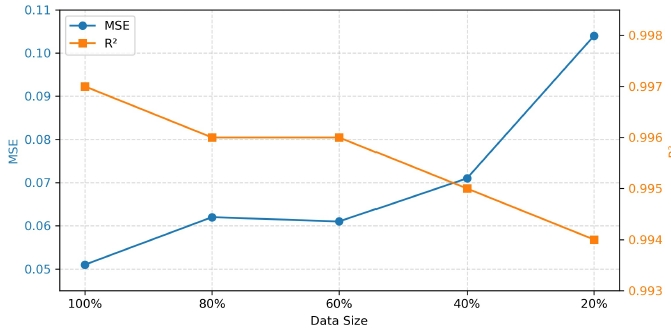
Fig. 9. Impact of training data size on depth regression performance using
ResNet50 for Robot Type 8.
Citation: When using the datasets, please cite: L. Wei and D. Zhang, "A Dataset and Benchmarks for Deep Learning-Based Optical Microrobot Pose and Depth Perception," 2025 International Conference on Manipulation, Automation and Robotics at Small Scales (MARSS), West Lafayette, IN, USA, 2025, pp. 1-8, doi: 10.1109/MARSS65887.2025.11072739.
Code
All experimental implementations are available at:
Zhang, Dandan, Antoine Barbot, Florent Seichepine, Frank P-W. Lo,
Wenjia Bai, Guang-Zhong Yang, and Benny Lo. "Micro-object pose
estimation with sim-to-real transfer learning using small
database." Communications Physics 5, no. 1 (2022): 80.
Zhang, Dandan, Yunxiao Ren, Antoine Barbot, Florent Seichepine,
Benny Lo, Zhuo-Chen Ma, and Guang-Zhong Yang. "Fabrication and
optical manipulation of micro-robots for biomedical
applications." Matter 5, no. 10 (2022): 3135-3160.
Zhang, Dandan, Antoine Barbot, Florent Seichepine, Frank P-W. Lo,
Wenjia Bai, Guang-Zhong Yang, and Benny Lo. "Micro-object pose
estimation with sim-to-real transfer learning using small
dataset." Communications Physics 5, no. 1 (2022): 80.
Ren, Yunxiao, Meysam Keshavarz, Salzitsa Anastasova, Ghazal
Hatami, Benny Lo, and Dandan Zhang. "Machine learning-based realtime
localization and automatic trapping of multiple microrobots in
optical tweezer." In 2022 international conference on manipulation,
automation and robotics at small scales (MARSS), pp. 1-6. IEEE, 2022.
Zhang, Dandan, Frank P-W. Lo, Jian-Qing Zheng, Wenjia Bai, Guang-
Zhong Yang, and Benny Lo. "Data-driven microscopic pose and
depth estimation for optical microrobot manipulation." Acs
Photonics 7, no. 11 (2020): 3003-3014.
Zhang, Dandan, Antoine Barbot, Benny Lo, and Guang‐Zhong Yang.
"Distributed force control for microrobot manipulation via planar
multi‐spot optical tweezer." Advanced Optical Materials 8, no. 21
(2020): 2000543
Note
The open-source resources—including the dataset, deep learning models, benchmarking results, and
documentation will be continuously updated. The presented algorithms are generalisable and can be
applied to other types of microscopic imaging data for perception-related tasks. In future work,
we plan to integrate more advanced AI techniques to further enhance benchmarking capabilities and
expand the applicability of our platform.